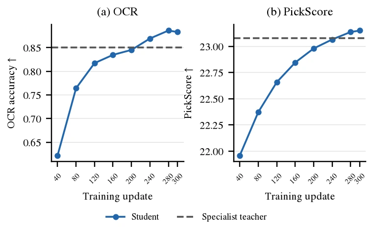
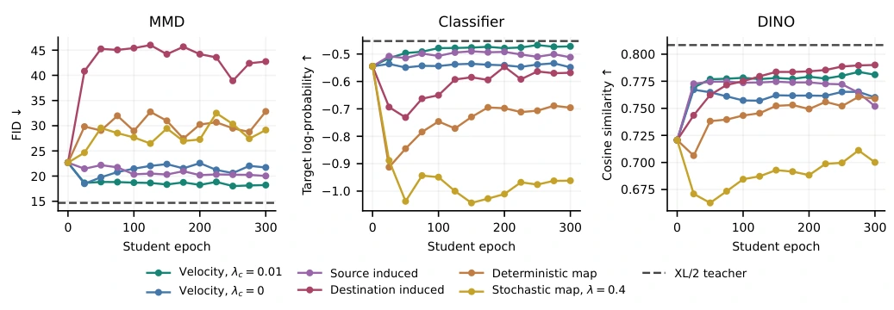

Collect student states
Use the native few-step flow map to acquire states efficiently.
ON-POLICY DISTILLATION · FEW-STEP GENERATION
Rollout–Kernel Separation for On-Policy Distillation
of Few-Step Flow-Map Generators
Georgia Institute of Technology
01 — OVERVIEW
FlowMap-OPD separates the native rollout that collects student states from the kernel used for teacher–student comparison. Flow–velocity consistency connects local supervision to the long-range map used for generation. This enables flow-map, induced-velocity and instantaneous-velocity supervision within one framework.
02 — INTERACTIVE COMPARISONS
One prompt, five models.
Select an example to compare specialists and student.
Qualitative examples from the paper (student λc = 0). The task scores below report the λc = 0.001 student.
03 — METHOD
The rollout supplies states.
The kernel defines the comparison.
Use the native few-step flow map to acquire states efficiently.
Compare long-range maps, induced velocities or instantaneous velocities.
Control teacher-velocity matching and student consistency separately.
04 — RESULTS
Capabilities consolidated in 300 training steps.
Results use λc = 0.001.
| Model | Object relationsGenEval | Text renderingOCR | Visual preferencesPickScore |
|---|---|---|---|
| Base | 0.5041 | 0.3491 | 20.9758 |
| Specialist teacherCorresponding task | 0.8454 | 0.8504 | 23.0772 |
| FlowMap-OPDOne student · 300 steps | 0.8580 | 0.8830 | 23.1502 |

Distilling XL/2 teachers into B/2 students explores the supervision design space. Under the MMD reward, instantaneous velocity supervision with λc = 0.01 reduces four-step FID from 22.68 to 18.23.
